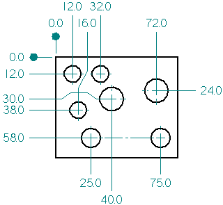
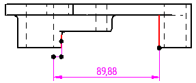

Adding jogs to dimensions
Adding jogs to dimension projection lines
You can improve the clarity of a dimensioned drawing and avoid overlapping dimension lines by adding jogs to the dimension projection lines. To learn how, see Add and remove jogs on a dimension.
-
You can use Alt+click to add one or more jogs to a selected coordinate dimension.

-
You can use Alt+click to add a jog to a selected horizontal or vertical dimension projection line.

-
You can remove a single jog on an existing dimension by holding the Alt key while you click a jog edit point.
-
You can remove all jogs on a selected dimension line or projection line using the Jog button on the command bar.
-
You can drag the edit points created by the jog to change the length and orientation of the jog lines.
There are some limitations when adding jogs to stacked or chained dimensions in dimension groups.